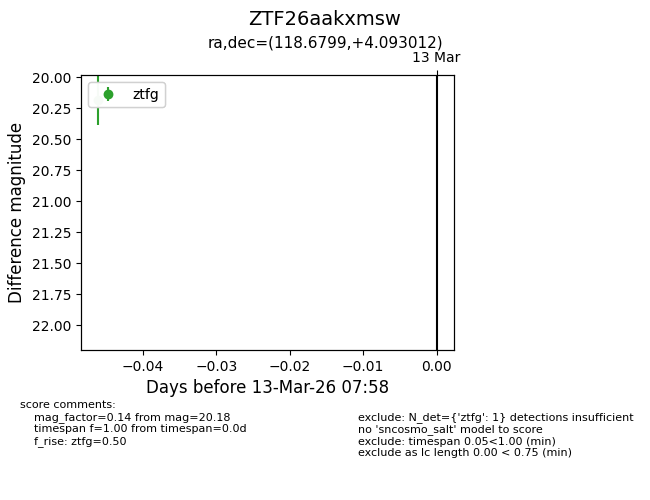
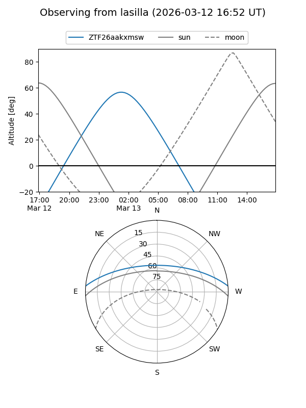
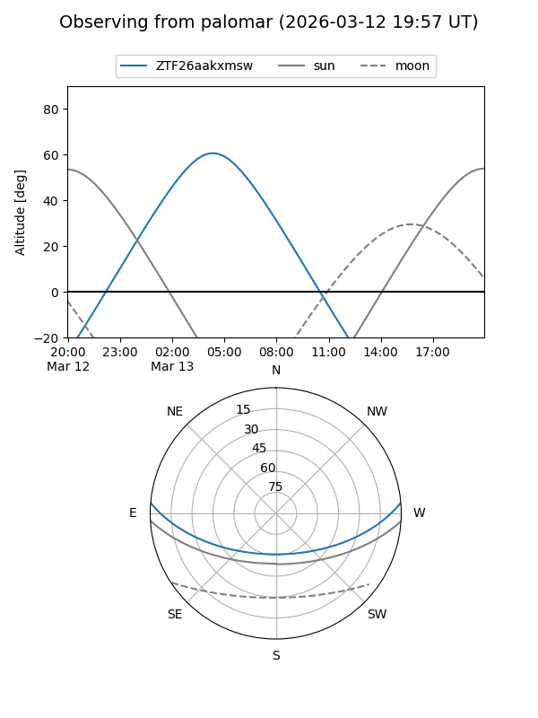

ZTF26aakxmsw
Target ZTF26aakxmsw at 2026-03-13 07:59
Aliases and brokers:
FINK: link
Lasair: link
ALeRCE: link
alt names
ZTF26aakxmsw (ztf,fink_ztf)
Coordinates:
equatorial (ra, dec) = 118.6799,+4.09301
equatorial (HMS+DMS) = 07:54:43.17,+04:05:34.84
galactic (l, b) = (216.5375,+15.93569)
Flags:
Photometry:
last ztfg=20.18
1 ztfg detections
Lightcurve

Visibility


Additional plots